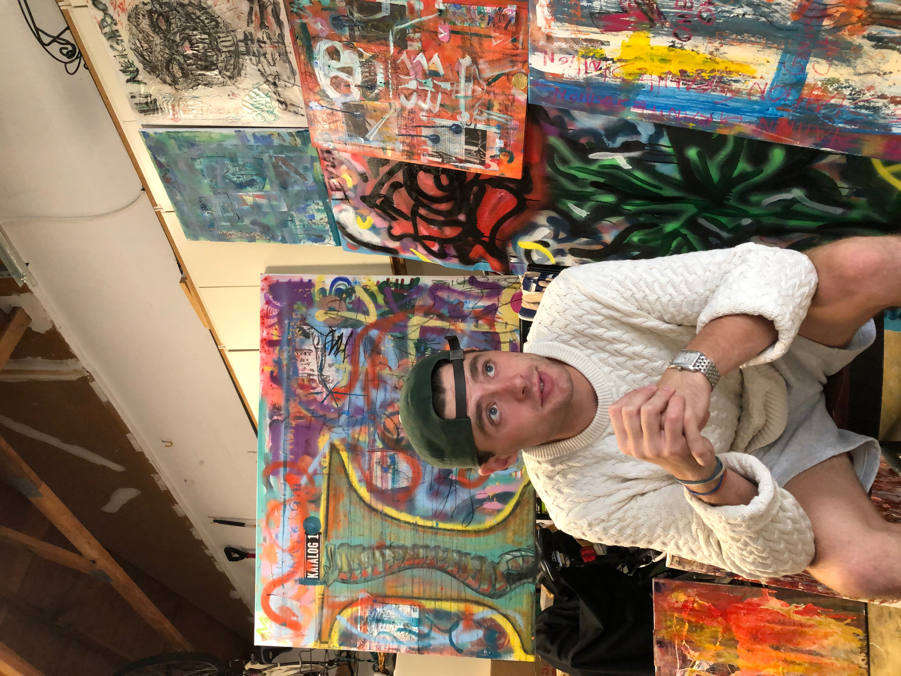

.png)
Who is dePo
He is an independent painter and poet from New Jersey, his work uses texture, color, and abstraction across various mediums. He attended Providence College, graduating in 2020 with a degree in Political Science. John’s education in history, philosophy, and literature is evidenced throughout his varied body of work.
During his senior year of college he took a painting course where he experimented with new forms of painting and pushed his natural ability for creativity and art. He began to share his work on an Instagram account, originally called depo_do_be_arting. The work was mostly smaller scale paintings and sketches.
“I refuse to limit the mediums of my expression. I am constantly seeking ways to challenge my creativity” - JMD
Beginning of Studio dePo
John was then commissioned to make a larger scale collage piece for his close relative. This piece titled, HOPE, became a turning point in his art. This piece sparked his passion and drove him to devote more time and resources into his art.
By using any materials he could get his hands on, thrifted framed images and old store window canvases, he continued to make brightly colored and textured pieces of art. Soon he was running out of room to store his work and as the weather got colder he lacked a space indoors to create. John was elated to be offered space in his aunt’s garage to store his work and paint in the cold. This garage is where Studio dePo was born. John decided to rename his Instagram and enlisted his younger sister as a pseudo gallery assistant for website and photography aid.
Working part-time at a local florist and liquor store, John offered his time to a gallery in Asbury Park, NJ. This eventually turned into a paid position where he learned about the inner workings of galleries and artist relations. During the Fall of 2021, John had two of his original works featured in the Oceana show for Parlor Gallery.
Today, he continues to create art, expanding his portfolio with digital art creations and a new “studio” space in another aunt’s barn. John loves creating art and pushing himself to make bigger and more thought provoking pieces.